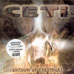

| Artist: | Ceti |
| Title: | Shadow Of The Angel |
| Label: | Oskar OSKAR 1015 CD |
| Length(s): | 74 minutes |
| Year(s) of release: | 2003 |
| Month of review: | [04/2006] |
| 1) | Beyond The Time | 0.45 |
| 2) | Treason | 5.44 |
| 3) | The Choice | 4.33 |
| 4) | The Blind Man | 4.14 |
| 5) | Time To Fly | 4.32 |
| 6) | Raining Dream | 5.31 |
| 7) | Song Of The Desert | 6.49 |
| 8) | Falcon's Flight | 5.00 |
| 9) | I Know | 4.47 |
| 10) | Destiny | 3.52 |
| 11) | Shadow Of The Angel | (Life and The Throne) 5.30 |
| 12) | The Body And Blood | 4.10 |
| 13) | Wybor (bonus) | 4.35 |
| 14) | Wiem (bonus) | 4.49 |
| 15) | Cien Aniola (Zucie I Tron) (bonus) | 5.30 |
| 16) | Cialo I Krew (bonus) | 4.08 |
The Choice opens with strong rhythm guitar work. There is plenty of pace, double bass and variation here. Then we come to a more (fast) flowing. The vocalist has a bit like a lower voiced Dio; he has that epic, dramatic type of voice. Thus the music is also destined to remind you of Rainbow and the solo work of Dio (All The Fools Sailed Away). The pace stays high, this is certainly a band firmly rooted in the modern progmetal, and since they did not give up on melody the end result is certainly appetizing.
On The Blind Man, the pace goed down somewhat, and the guitar is used for effect as well as for power. The music stays thoroughly metal, epic metal, but still. Time To Fly opens with sinister piano, creating a nice dark atmosphere. The synths add some strings, so that we get a nice filmic part. Then drums and guitar set in, but the music stays epic and majestic. The guitar solo is excellent. Surprisingly, the song turns out to be instrumental. Not something often done when a band has a singer of quality.
Raining Dream also has plenty of strings, while the song style is now more in the form of a power ballad. The pace is much slower, the drumming relatively monotonous. Song Of The Desert is a plodding piece of progmetal. The vocal melodies are somewhat less distinctive this time around.
Falcon's Flight also has a Death metal style vocals in the back. I guess this is Peter from the band Vader. Again, the keyboards bring in an orchestral feel with plenty of string like material. I Know opens in typical classically oriented style, with church organ and angelic vocals. The song is pervaded by it, although we do alternate with pacey vocal parts reminiscent of Magnum.
On Destiny, the music hardens and I guess that is a good idea. The pace is high, with nicely varied drumming, and heavy rhythm guitars in the lead. The vocals seem a bit sloppy, due to the speed of singing. But in the slower passages, the vocals stand strong. The guitar solo is a bit obligato.
Again Shadow Of The Angel is not the type of song that brings us anything new, compared with many existing bands, but for some reason they manage to appeal a bit more than the average powermetal band. This may have to do with the strong drive present in the music. The middle part sounds like I would play the song live, not how I would do it on an album. The keyboards bring in mcuh of the melody.
On The Body And Blood the vocal melody reminds me strongly of those masters of rock ballads, The Scorpions, except that Kupczyk has less of an accent, and sings less plaintively. They do get a bit too melodramatic here.
The bonus tracks are basically Polish versions of some of the English tracks. Wybor is The Choice, Wiem is I Know, Cien Aniola (Zucie I Tron) is the Polish title track, and Cialo I Krew is The Body And Blood.